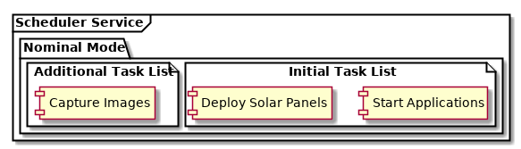

Scheduler Service¶
The KubOS system includes a scheduler service to facilitate recurring and one time tasks with specific timing requirements, and to facilitate managing these tasks in groups of system-level modes.
Warning
The scheduler service is currently not included in Kubos Linux builds for the iOBC due to size constraints. We are working on a fix and it will be included in the next release of KubOS.
Behavior¶
Terminology¶
The behavior of the scheduler is defined by three levels of organization: mode, schedule, and task. The mode determines which schedule directory is being executed. The schedule is then assembled by combining all the task lists in the schedule directory, each of which can contain one or many tasks.

Adding Tasks¶
New tasks can be added to a schedule by uploading a task list to a location which is accessible to the scheduler, and importing that task list to the appropriate mode. Tasks can also be added directly via the GraphQL interface.
Bootup Behavior¶
Upon boot, or service start, the scheduler reads all task lists in the active
mode directory and schedules all tasks from that mode. The default active mode directory
is found at /home/system/etc/schedules/active, which is a symlink
to the actual active mode’s directory.
Scheduler Modes¶
By default the scheduler comes with a single mode: safe. This mode is reserved as a
fallback and default operating mode. Additional modes can be created and made active
through the GraphQL interface. All modes are represented as different directories in
the schedules directory (/home/system/etc/schedules).
Only one mode can be active at any given time.
Failover Behavior¶
In addition to using the safe mode as the default operating mode, the scheduler is
designed to automatically failover to the safe mode when any problems are detected.
The following situations will cause the scheduler to activate the safe mode:
- The scheduler starts and no modes exist
- The scheduler starts and no mode is active
- The scheduler attempts to activate a mode and the mode does not exist
- The scheduler loads an active mode and encounters an invalid task list
The only error situation that will not cause the scheduler to activate safe mode
is if the scheduler encounters errors when querying the application service to start an app.
The safe mode may also be activated using the GraphQL safeMode query.
Tasks and How to Make Them¶
Schedules are made up of tasks, which are specified through task lists in the json format. Each task list contains all of the necessary information for each task to be scheduled. Multiple task lists can coexist in the same mode folder, allowing for easy loading of new scheduled tasks.
Task format¶
Tasks specify a description and a time of execution using a combination of the delay,
time, and period fields. Each task has an associated app. The scheduler
currently delegates the actual running of tasks to the app-service, so each
app definition contains the necessary information needed by the
app-service to run the app.
An example task list:
{
"tasks": [
{
"description": "Starts camera",
"delay": "10m",
"app": {
"name": "activate-camera"
}
},
{
"description": "Deploys solar panels",
"time": "2019-08-11 15:20:10",
"app": {
"name": "deploy-solar-panels"
}
},
{
"description": "Regular log cleanup",
"delay": "1h",
"period": "12h",
"app": {
"name": "clean-logs"
}
}
]
}
Specifying Time of Execution¶
Tasks can have their scheduled time of execution specified using three different
fields: delay, time, and period. The delay field specifies
a delay before the task executes. The time field specifies a UTC date and time
when the task will be executed. The period field indicates the app should
be executed on a recurring basis and specifies the period of recurrence. The delay
field is required, except when using the time field. The time and period
fields may not be used together.
Delayed Tasks¶
Tasks configured with only a delay will be executed on boot or on schedule change.
The actual execution time of the task will be affected by the associated delay times.
If more than one task has the exact same delay, the execution order might be unpredictable.
Each delay task is specified like so:
{
"description": "Task description",
"delay": "Required start delay in Xh Ym Zs format"
"app": {
"name": "Required registered name of app to run",
"args": ["Optional", "command", "line", "app", "args"],
"config": "Optional path to app config",
}
}
One Time Tasks¶
Tasks configured with a time field will be executed once at a set time. The designated
time and system time are both always assumed to be in UTC. Each one time task is specified
like so:
{
"description": "Task description",
"time": "Required UTC time of execution in yyyy-mm-dd hh:mm:ss format",
"app": {
"name": "Required registered name of app to run",
"args": ["Optional", "command", "line", "app", "args"],
"config": "Optional path to app config"
}
}
Recurring Tasks¶
Tasks configured with a period field will be executed on a recurring basis. The task
will first occur after delay and then recur each period thereafter.
Each recurring task in this section is specified like so:
{
"description": "Task description",
"delay": "Required start delay in Xh Ym Zs format",
"period": "Required period of execution in Xh Ym Zs format",
"app": {
"name": "Required registered name of app to run",
"args": ["Optional", "command", "line", "app", "args"],
"config": "Optional path to app config"
}
}
Service Configuration¶
The scheduler service has the following available configuration parameter which may be
specified in the config.toml file under [scheduler-service]:
schedules-dir- (Default:/home/system/etc/schedules/) The path to the directory where modes and their schedules will be stored. This directory will be created if it does not already exist.
The scheduler service also has the standard GraphQL interface parameters available for
configuration under [scheduler-service.addr]:
ip- The IP address of the GraphQL serverport- The port the GraphQL server will listen on
GraphQL API¶
Queries¶
The scheduler exposes two queries, activeMode and availableModes.
Note
All names of modes and task lists are converted to lower case for usage inside of the scheduler service.
Examining the Active Mode¶
The activeMode query exposes information about the currently active
mode. It has the following schema:
{
activeMode: {
name: String,
path: String,
lastRevised: String,
active: Boolean
schedule: [TaskList],
}
}
Examining All Modes¶
The availableModes query exposes information about the currently available
modes. It has the following schema:
{
availableModes(name: String): [
{
name: String,
path: String,
lastRevised: String,
active: Boolean
schedule: [TaskList],
}
]
}
Schemas for Task and Lists¶
The TaskList object exposes metadata about individual task lists. It
has the following schema:
{
TaskList:
{
filename: String,
path: String,
timeImported: String
tasks: [Task],
}
}
The Task object, and it’s sub-objects, expose information about
individual schedule tasks. They have the following schemas:
{
Task:
{
description: String,
delay: String,
time: String,
period: String,
app: App
}
App:
{
name: String,
args: [String],
config: String,
}
}
Mutations¶
The scheduler also exposes the following mutations: createMode, removeMode,
activateMode, importTaskList, importRawTaskList, removeTaskList,
and safeMode.
Note
All names of modes and task lists are converted to lower case for usage inside of the scheduler service.
Creating Modes¶
The createMode mutation instructs the scheduler to create a new empty schedule mode.
It has the following schema:
mutation {
createMode(name: String!) {
success: Boolean,
errors: String
}
}
Removing Modes¶
The removeMode mutation instructs the scheduler to delete an existing mode’s
directory and all schedules within. It cannot be applied to the currently active
mode, or to the safe mode. It has the following schema:
mutation {
removeMode(name: String!) {
success: Boolean,
errors: String
}
}
Activating Modes¶
The activateMode mutation instructs the scheduler to make the specified mode
active. It cannot be used to activate safe mode, the safeMode mutation is the
only way to activate safe mode. activateMode has the following schema:
mutation {
activateMode(name: String!): {
success: Boolean,
errors: String
}
}
Activating Safe Mode¶
The safeMode mutation instructs the scheduler to make the safe mode
active. This mutation is the only way to activate safe mode and can only
activate that mode. It has the following schema:
mutation {
safeMode(): {
success: Boolean,
errors: String
}
}
Importing Task Lists¶
The importTaskList mutation allows the scheduler to import a new task list into
a specified mode. If the targeted mode is active, all tasks in the task list will be
immediately scheduled. It has the following schema:
mutation {
importTaskList(path: String!, name: String!, mode:String!): {
success: Boolean,
errors: String
}
}
Removing Task Lists¶
The removeTaskList mutation allows the scheduler to remove a task list from
a specified mode. If the mode is active, all tasks in the task list will be removed
from the schedule. It as the following schema:
mutation {
removeTaskList(name: String!, mode:String!): {
success: Boolean,
errors: String
}
}
Importing Raw Task Lists¶
The importRawTaskList mutation allows the scheduler to directly receive raw JSON
and import it into a task list in a mode. If the mode is active, all the tasks in
the JSON will be immediately loaded for scheduling. It has the following schema:
mutation {
importRawTaskList(name: String!, mode: String!, json: String!) {
success: Boolean,
errors: String
}
}
When using the importRawTaskList mutation it is important to remember to escape
all double quotes inside of the JSON. Here is an example:
mutation {
importRawTaskList(
name: "camera",
mode: "operational",
json: "{\"tasks\":[{\"description\":\"start-camera\",\"delay\":\"10m\",\"app\": {\"name\":\"activate-camera\"}}]}"
) {
success,
errors
}
}